방사선비파괴검사기사 (2016-10-01 기출문제)
1과목: 비파괴검사 개론
1. 다음 비파괴검사법 중 강판의 도금두께 측정에 적합한 것은?
- 방사선투과검사
- 초음파탐상검사
- 침투탐상검사
- 와전류탐상검사
(정답률: 60%)

2. 자분탐상시험과 비교할 때 침투탐상시험을 우선적으로 적용할 수 있는 가장 큰 이유는?
- 시험체의 재질에 대한 제한이 적기 때문에
- 미세한 균열의 검출감도가 우수하기 때문에
- 열처리 직후의 검사에서 신뢰성이 높기 때문에
- 표면 전처리의 정도가 높지 않아도 되기 때문에
(정답률: 80%)
3. 감마선(γ선)투과검사에 대한 설명으로 옳은 것은?
- 외부의 전원이 필요하다.
- 열려 있는 작은 결함에도 사용할 수 있다.
- 360° 또는 일정 방향으로 투사의 조절이 불가능하다.
- 투과 능력은 사용하는 동위원소가 달라도 모두 같다.
(정답률: 77%)
4. 각종 비파괴검사법에서 시험체 내의 결함정도를 얻을 때 의사지시를 만들거나 또는 결함검출 능력을 저하시키는 요인과의 연결이 잘못된 것은?
- 방사선투과시험 : 산란선
- 초음파탐상시험 : 표면 거칠기
- 자분탐상시험 : 전극 지시
- 와전류탐상시험 : 적산효과
(정답률: 60%)
5. 초음파탐상시험에 사용되는 탐촉자의 진동자 재질 중 티탄산바륨 탐촉자의 단점으로 옳은 것은?
- 물에 녹는다.
- 내마모성이 낮다.
- 송신효율이 나쁘다.
- 화학적으로 불안정하다.
(정답률: 62%)
6. 스프링강의 구비조건으로 적합하지 않는 것은?
- 피로저항이 커야 한다.
- 탄성한계가 높아야 한다.
- 소르바이트 조직이 좋다.
- 충격저항이 작아야 한다.
(정답률: 75%)
7. 다음의 강 중 탄소(C)의 양이 가장 많은 것은?
- 연강
- 경강
- 공정주철
- 탄소공구강
(정답률: 70%)
8. 용융점이 높아 용해가 곤란하여 주로 분말야금법으로 성형하는 금속으로 고속도강의 첨가 원소로도 사용되는 것은?
- W
- Ag
- Au
- Cu
(정답률: 56%)
9. 마그네슘 합금의 특성이 아닌 것은?
- 가벼운 금속이다.
- 기계 가공성이 좋다.
- 비강도가 커서 항공 우주용 재료로 적합하다.
- 소성 가공성이 아주 용이하여 상온 변형이 쉽다.
(정답률: 75%)
10. 마우러 조직도(maurer diagram)란?
- 주철에서 C와 Si 양에 따른 주철의 조직 관계
- 주철에서 C와 P 양에 따른 주철의 조직 관계
- 주철에서 C와 Mn 양에 따른 주철의 조직 관계
- 주철에서 C와 S 양에 따른 주철의 조직 관계
(정답률: 43%)
11. 알루미늄(Al) 합금에 대한 설명 중 틀린 것은?
- Y 합금의 주요 성분은 Al-Cu-Mg 이다.
- 라우탈의 주요 조성은 Al-Cu-Si 계 합금이다.
- Al에 약 10%Mo을 첨가한 합금을 하이드로날륨이라 한다.
- Al-Si 합금계를 실루민이라 하며 개량처리하여 사용한다.
(정답률: 50%)
12. 팽창계수가 아주 적어 시계 태엽, 정밀기계 부품으로 사용하는 것은?
- 인바
- 고망간강
- 탕갈로이
- 고규소강
(정답률: 71%)
13. 오스테나이트계 스테인리스강에 대한 설명으로 틀린 것은?
- 인성, 연성, 내식성을 갖는다.
- 결정구조는 BCC이고, 자성체이다.
- 고용화 열처리 상태에서 오스테나이트 조직이다.
- Cr 12~26%, Ni 6~22%를 함유하는 Fe-Cr-Ni 합금이다.
(정답률: 42%)
14. 다음 중 Cu-Zn 합금에 관한 설명으로 옳은 것은?
- α의 결정형은 면심입방격자이며, β의 결정형은 체심입방격자이다.
- 공업용으로 사용하는 황동은 Zn이 최대 60%이상 함유한다.
- 황동에서는 α, β, γ, δ, ε, η, θ의 7개 상이 상태도에 나타난다.
- Cu에 Zn이 35%를 넘으면 β상이 나오므로 경도와 강도가 낮아진다.
(정답률: 50%)
15. 컵 앤 콘(Cup and Cone) 현상은 어떠한 파괴변형 과정을 말하는가?
- 크리프파괴
- 피로파괴
- 연성파괴
- 취성파괴
(정답률: 43%)
16. MIG 용접의 전류밀도는 TIG 용접의 몇 배 정도인가?
- 2배
- 4배
- 6배
- 10배
(정답률: 49%)
17. 아크 전압 30V, 아크 전류 300A, 용접속도 10cm/min로 용접 시 발생하는 용접 입열은 몇 Joule/cm인가?
- 18000
- 36000
- 54000
- 90000
(정답률: 56%)
18. 직류 아크 용접기를 사용할 경우에 전극에서 발생하는 아크열에 대해 올바르게 설명한 것은?
- 양극(+) 측의 발열량이 높다.
- 음극(-) 측의 발열량이 높다.
- 양극(+), 음극(-) 측의 발열량이 같다.
- 전류가 그면 양극(+) 측의 발열량이 높고, 작으면 음극(-) 측의 발열량이 높다.
(정답률: 49%)
19. 납땜에 사용되는 용제가 갖추어야 할 조건으로 틀린 것은?
- 청정한 금속면의 산화를 촉진시킬 것
- 모재나 땜납에 대한 부식 작용이 최소한일 것
- 모재의 산화 피막과 같은 불순물을 제거하고 유동성이 좋을 것
- 땜납의 표면 장력을 낮추어서 모재와의 친화력을 높일 것
(정답률: 71%)
20. 용접 결함의 분류 중에서 구조상 결함에 해당하는 것은?
- 변형
- 기공
- 인장강도의 부족
- 용접 금속부 형상이 부적당
(정답률: 45%)
2과목: 방사선투과검사 원리
21. 초기 방사선 강도의 1/10 이 되는 수준의 두께를 1/10가층이라 한다. 이것을 식으로 표시할 때 옳은 것은? (단, μ : 선형 흡수계수, t1/2 : 반가층이다.)
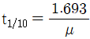
- t1/10=μㆍt1/2
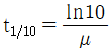
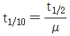
(정답률: 62%)
22. X선의 입자의 성질을 나타내는 내용과 관계가 먼 것은?
- 회절(diffraction)
- 광전효과(photoelectric effect)
- 콤프턴산란(compton effect)
- 광양자(photon)
(정답률: 34%)
23. X선 발생장치의 표적물질은 원자번호가 높을수록 좋다. 그 이유로 가장 적절한 것은?
- 비열이 크기 때문에
- 융점이 낮기 때문에
- 열전도가 낮기 때문에
- 발생효율이 좋기 때문에
(정답률: 64%)
24. 필름특성곡선상에서 상대 노출량 IA, IB에 대한 농도가 DA, DB라면 이 필름의 필름콘트라스트 γAB는?
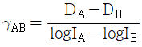
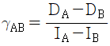
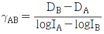
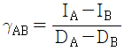
(정답률: 58%)
25. X선 발생장치의 사용에 대한 안전상 주의점을 설명한 것으로 틀린 것은?
- 조리개와 필터는 산란선이나 연속 X선의 피폭을 방지하기 위해 부착한다.
- X선 발생장치의 제어기는 고열이 발생하므로 사용 후 커버를 벗겨서 냉각시켜 준다.
- X선 장치를 사용할 때는 서베이미터 및 개인 안정장구를 휴대하여야 한다.
- X선의 발생이나 장치의 안전 확인은 복수의 방법으로 행하여야 한다.
(정답률: 84%)
26. 방사선의 에너지가 증가되면 피사체콘트라스트(Subject Contrast)는 어떻게 되는가?
- 감소한다.
- 동일하다.
- 증가한다.
- 에너지의 곱에 비례한다.
(정답률: 50%)
27. 현상제의 구성 성분과 주기능을 조합한 것이다. 잘못 조합된 것은?
- 페니돈(phenidone) - 환원제
- 하이드로퀴논(hydroquinone) - 환원제
- 탄산나트륨(sodium carbonate) - 억제제
- 글루터 알데히드(gluter aldehyde) - 경화제
(정답률: 45%)
28. 방사선투과 사진의 콘트라스트 변화에 대한 설명으로 옳은 것은?
- 현상시간이 짧을 때 콘트라스트는 높아진다.
- 현상액이 피로하여지면 콘트라스트는 커진다.
- 사진농도가 낮으면 콘트라스트는 낮아진다.
- 산란선량이 적으면 콘트라스트는 낮아진다.
(정답률: 78%)
29. 공업용 방사선투과검사에서 사용하는 Cs137은 어떤 과정으로 얻어지는가?
- 중성자 방사화
- 핵분열 생성물로부터의 분리
- 하전입자의 충돌
- Proton의 충돌
(정답률: 67%)
30. 다음 중 필름콘트라스트에 영향을 미치는 인자가 아닌 것은?
- 필름의 종류
- 현상시간
- 방사선 선질
- 현상액의 강도
(정답률: 69%)
31. 맞대기 용접부를 방사선 투과사진 촬영 시 선형투과도계를 놓는 방법으로 옳은 것은?
- 필름에 밀착시킨다.
- 가는 선이 시험체의 중앙을 향하도록 한다.
- 별도의 규정이 없으면 선원 쪽 시험체 표면에 놓는다.
- 방사선빔의 방향과 가능한 한 평행이 되도록 놓는다.
(정답률: 55%)
32. 방사선 투과사진에서 검사체의 실제 크기와 거의 동일한 영상을 얻기 위한 촬영방법으로 효과적인 것은?
- 선원과 검사체 간 거리를 멀리한다.
- 검사체와 필름 간 거리를 멀리한다.
- 선원의 크기는 가능한 한 큰 것을 사용한다.
- 방사선빔은 필름면에 평행이어야 한다.
(정답률: 77%)
33. 방사선투과사진에 불연속부와 관계없는 날카롭고 검게 나타나는 새발(bird-foot) 모양의 점들은 무엇에 의한 것으로 판단되는가?
- 필름 저장 중 대기 방사능에 피폭되었을 때 발생
- 오래된 현상제로 현상을 오래했을 때 발생
- 마찰에 의해 생기는 방전에 의해 발생
- 정착 후의 부적절한 세척으로 인해 발생
(정답률: 69%)
34. 다음 동위원소 중 에너지가 가장 낮은 것은?
- Co-60
- Ir-192
- Tm-70
- Cs-137
(정답률: 36%)
35. X선 필름의 사진 농도(D) 표시로 옳은 것은? (단, Lo=입사광의 강도, L=투과 후의 강도이다.)
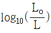
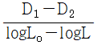
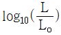
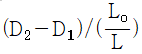
(정답률: 75%)
36. 다음 중 Co-60의 비방사능은 어느 것에 의존하는가?
- 재료의 Young율
- 재료의 원자번호
- 재료의 화학식
- 재료가 원자로에 있었던 시간
(정답률: 60%)
37. X선의 발생에 관한 설명이다. 틀린 것은?
- X선관의 양극은 금속 표적으로 되어 있다.
- X선관 내에는 고진공으로 되어 있다.
- X선관에서 관전류는 필라멘트에 흐르는 전류에 비례한다.
- X선관에서 양극의 표적에는 열전자를 집속시키기 위한 집속 컵이 있다.
(정답률: 70%)
38. 다음 중 기하학적 불선명도가 가장 큰 경우는?
- 피사체ㆍ필름 간의 거리가 큼
- 후방산란이 없음
- 필름의 입도가 작음
- 피사체가 놓인 방향이 수직임
(정답률: 65%)
39. 방사선투과시험에서의 입상성에 관한 설명으로 틀린 것은?
- 감광 속도가 느린 필름은 낮은 입상성을 나타낸다.
- 현상시간을 증가시키면 상의 입상성도 증가한다.
- 필름의 입상성은 방사선 투과량이 증가함에 따라 증가한다.
- 필름의 입상성의 증가율은 필름의 종류와는 무관한 함수이다.
(정답률: 40%)
40. 필름 현상 시 정지과정이 누락된 경우 필름에 나타날 수 있는 현상은?
- 기포
- 주름
- 흰반점
- 농도 얼룩
(정답률: 64%)
3과목: 방사선투과검사 시험
41. 한국산업표준(KS)에서 언더컷(under cut)에 대한 방사선 투과사진의 판정은 어떻게 하는가?
- 크기에 관계없이 불합격처리한다.
- 1종 결함으로 하여 등급분류한다.
- 등급분류 대상에 포함되지 않는다.
- 2종 결함으로 하되 등급분류 없이 합격처리한다.
(정답률: 62%)
42. X선 발생장치의 선질 및 선량에 관한 내용으로 옳게 설명된 것은?
- X선 필름의 감도는 X선의 선질과는 무관하다.
- 관전류를 증가신키면 선질과 선량이 모두 커진다.
- X선 선량률의 수치적인 표현법은 kV를 사용한다.
- X선 선질의 수치적인 표현법은 파장이나 에너지를 사용한다.
(정답률: 50%)
43. 주강품 내에서 용탕이 완전히 주형을 채우지 못하여 발생한 결함을 무엇이라 하는가?
- 수축관(Shriimkage)
- 스캐브(Scabs)
- 콜드셧(Cold shut)
- 미스런(Misrun)
(정답률: 38%)
44. X선 발생장치의 올바른 유지관리 방법으로 틀린 것은?
- 충분한 예열로 급격한 열충격을 피한다.
- 장시간 사용하지 않던 장비는 예열시간을 길게 한다.
- X선관에 많은 부하가 걸리도록 하여 휴지시간(Duty cycle) 이상을 사용한다.
- X선 발생장치의 사용률을 높이기 위해 X선관은 진공으로 하며, 양극은 충분히 냉각시킨다.
(정답률: 75%)
45. 다음의 방사선투과시험법 중 삼차원 영상법인 것은?
- Fluoroscopy(형광투시법), Image amplifier(영상증폭기)
- Xeroradiography(전사법), Tomography(단층촬영법)
- Steroradiography(입체촬영법), Parallax method(파라렉스법)
- Flash radiography(순간방사선투과검사), In-motion radiography(이동방사선투과검사)
(정답률: 60%)
46. 도표는 철강에 대한 노출선도로서 기준농도는 2.0이고, 가로축은 두께, 세로축은 노출시간이다. 2인치 두께의 철강 시험체를 X선 투과촬영 시 사진농도만 2.5로 높이고자 할 때 노출시간은 얼마나 주어야 하는가? (단, 특성곡선에서 농도 2.5와 2.0과의 차에 해당하는 log E는 0.3이며, 100.3은 2이다.)
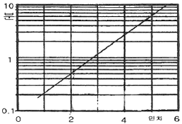
- 0.25분
- 0.5분
- 1분
- 2분
(정답률: 40%)
47. 두께가 10, 15, 20cm인 시편에 노출시간을 각각 3, 4, 10분을 주어 동일한 농도를 얻었다. 이 시편의 반가층은 약 얼마인가?
- 5.6cm
- 6.8cm
- 7.4cm
- 8.0cm
(정답률: 55%)
48. 연박증감지에 비하여 형광증감지의 장점으로 옳은 것은?
- 선명도를 높일 수 있다.
- 노출시간을 단축시킬 수 있다.
- 산란방사선을 감소시킬 수 있다.
- 방사선의 자기흡수량을 감소시켜 형광을 유발한다.
(정답률: 47%)
49. 방사선 투과사진의 상에서, 농도의 비균일성에 대한 시각적 느낌으로 정의되는 필름의 특성은?
- 감도
- 명료도
- 입상성
- 콘트라스트
(정답률: 40%)
50. 후방산란 X선으로부터 필름을 보호하기 위한 적절한 조치는?
- 필름 카세트 후면에 납판을 받친다.
- 필름 카세트 후면에 나무판을 받친다.
- 필름과 시험체 사이에 마스크를 끼운다.
- 방사선원 가까이 필터(filter)를 끼운다.
(정답률: 75%)
51. 그림은 X선 필름의 특성을 나타낸 필름특성곡선이다. 다음 중 가장 노출시간이 짧은 필름은?
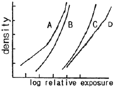
- A형 필름
- B형 필름
- C형 필름
- D형 필름
(정답률: 73%)
52. 계조계의 1차적 사용 목적을 바르게 설명한 것은?
- 투과사진의 콘트라스트를 조사하기 위하여 사용된다.
- 투과사진의 명료도를 조사하기 위하여 사용된다.
- 투과사진의 감도를 조사하기 위하여 사용된다.
- 투과사진의 식별도를 조사하기 위하여 사용된다.
(정답률: 24%)
53. X선 발생장치에서 X선을 조사할 때 강도가 가장 높은 부분은?
- 수평부분은 모두 같다.
- 수직 아래 부분
- 수직선으로부터 양극 쪽 부분
- 수직선으로부터 음극 쪽 부분
(정답률: 48%)
54. 다음 중 뿌염(fog) 현상을 초래할 수 있는 경우에 해당하지 않는 것은?
- 고온, 고습도에서 필름을 보관하였을 경우
- 과도한 암등에 노출되었을 경우
- 높은 온도에서 장시간 현상하였을 경우
- 형광증감지를 사용하였을 경우
(정답률: 69%)
55. X선관의 가속전자가 물질에 입사하여 K각궤도의 전자와 충돌, 궤도전자를 방출하고 가속전자의 에너지는 모두 물질에 흡수되는 현상에서 발생되는 특성X선을 무엇이라 하는가?
- 광붕괴
- 형광X선
- 콤프톤산란
- 전자쌍생성
(정답률: 27%)
56. 방사선투과시험법 중 형광투시법의 특징으로 볼 수 없는 것은?
- 다량의 제품을 신속히 검사할 수 있다.
- 밀도가 높은 제품의 검사에 적합하다.
- 검사 즉시 판정이 가능하다.
- 탐상 감도가 다소 낮다.
(정답률: 64%)
57. 주강품에서 발생되는 결함에 관한 설명으로 옳은 것은?
- 열간균열은 금속이 응고할 때, 결정립계가 대단히 약하고, 여기에 팽창에 의한 압축력이 가해지는 경우에 발생한다.
- 냉간균열은 냉각 시의 내부응력에 의해 생기는 것으로 구상으로 나타나는 경우가 많다.
- 주형 내에서 용탕의 2개 흐름이 합류하여 그 경계가 완전히 용입되지 못하고 잔류한 것을 콜드셧이라 한다.
- 주형표면의 모래가 용탕의 흐름에 의해 완전히 박리되어 다른 곳으로 이동된 것을 버클(buckle)이라 한다.
(정답률: 30%)
58. 다음 중 필름특성곡선을 이용하여 교정인자를 구할 수 있는 조건은?
- 현상조건의 변화
- 사진 농도의 변화
- 스크린의 변화
- 장치의 변화
(정답률: 62%)
59. 방사선발생장치에서 X선 관전압을 높이면 파장과 투과력에는 어떤 영향을 끼치는가?
- 파장이 짧고, 투과력이 강한 X선을 발생한다.
- 파장이 길고, 투과력이 강한 X선을 발생한다.
- 파장은 변화없고, 투과력이 약한 X선을 발생한다.
- 파장이 짧고, 투과력이 약한 X선을 발생한다.
(정답률: 78%)
60. 다음 중 방사선 투과검사에 사용되는 Ir-192선원의 붕괴도표(decay chart)상에 표기되어 있지 않는 것은?
- 현상조건
- 선원의 크기
- 선원의 제조일
- 선원의 강도
(정답률: 69%)
4과목: 방사선투과검사 규격
61. 알루미늄 주물의 방사선 투과 시험 방법 및 투과 사진의 등급분류방법(KS D 0241)에 따른 투과 사진의 등급 분류 방법으로 틀린 것은?
- 결함의 종류는 가스 홀을 비롯하여 총 7종류로 구분한다.
- 등급은 0~7의 8등급으로 결정한다.
- 품질 등급은 A~F의 6단계의 품질 등급으로 판정한다.
- 두 개의 결함이 존재 시 어느 쪽이라도 허용한계 등급인 경우 불합격으로 판정한다.
(정답률: 29%)
62. 강 용접 이음부의 방사선투과 시험방법(KS B 0845)에 따라 모재 두께 50mm인 용접부에 발생한 2종 흠(결함)을 분류할 때 10mm의 융합불량에 대한 올바른 분류는?
- 1류로 한다.
- 2류로 한다.
- 계수 2를 곱한 길이가 20mm이므로 3류로 한다.
- 융합불량은 길이에 관계없이 4류로 한다.
(정답률: 38%)
63. 원자력안전위원회에 규칙으로 정한 방사선관리구역의 외부방사선량률 값은? (단, 주당 40시간 근로를 기준으로 한다.)
- 시간당 10μSv 이하
- 시간당 20μSv 이하
- 시간당 30μSv 이하
- 시간당 50μSv 이하
(정답률: 74%)
64. 보일러 및 압력용기에 대한 방사선투과검사(ASME Sec.V Art.2)에서 스텝웨지 비교 필름에 표기된 농도 값으로부터 얼마 이상 벗어나지 않으면 합격인가?
- ±0.001
- ±0.1
- ±1
- ±10
(정답률: 55%)
65. 강 용접 이음부의 방사선투과 시험방법(KS B 0845)에 의한 흠의 분류에서 길이를 구하지 않는 것은?
- 용입 불량
- 융랍 불량
- 갈라짐
- 파이프
(정답률: 56%)
66. 보일러 및 압력용기에 대한 방사선투과검사(ASME Sec.V Art.2)에서 규정하는 투과도계 표준모양은?
- 유공형 투과도계 또는 선형 투과도계
- 선형 투과도계 또는 계단형 투과도계
- 계단형 투과도계 또는 쌍 선형 투과도계
- 쌍 선형 투과도계 또는 유공형 투과도계
(정답률: 53%)
67. 강 용접 이음부의 방사선투과 시험방법(KS B 0845)에 따라 방사선 투과시험 시 시험부의 유효길이가 25cm일 때 강 용접부를 A급으로 촬영하고자 한다. 선원과 투과도계간의 거리는 최소 얼마 이상이 되어야 하는가? (단, f는 선원치수, d는 투과도계의 식별 최소선 지름이며, 2f/5는 5라고 가정한다.)
- 50cm
- 75cm
- 125cm
- 150cm
(정답률: 25%)
68. 다음 중 같은 종류의 단위로 옳게 짝지어진 것은?
- R : Bq
- Gy : J/kg
- rem : Sv/h
- red/h : C/kg
(정답률: 62%)
69. 다음 중 Co-60을 사용하여 방사선투과검사를 할 때 고에너지로 인하여 인체에 가장 위해한 방사선은?
- 감마선
- 알파선
- 베타선
- 중성자선
(정답률: 35%)
70. 배관 용접부의 비파괴 시험방법(KS D 0888)에서 내부필름 촬영방법에 따라 방사선 투과검사 시 모재의 두께가 40mm 초과 50mm이하일 때 계조계의 종류는?
- 50형
- 25형
- 20형
- 15형
(정답률: 32%)
71. 보일러 및 압력용기에 대한 방사선투과검사(ASME Sec.V Art.2)에서 필름 농도계의 교정 및 주기점검에 대한 사항으로 틀린 것은?
- 교정은 최소한 매 90일마다 교정해야 한다.
- 교정 필름상에서 1.0, 2.0, 3.0, 4.0에 가장 근접한 농도값을 가진 스텝을 읽는다.
- 읽은 값과 실제 스텝 농도값의 차이가 1 이내여야 합격이다.
- 주기적인 교정확인 점검은 매 판독시작 시점, 8시간 연속사용 후 또는 렌즈구경 변경 후에 실시해야 하며 문서화의 필요성은 없다.
(정답률: 31%)
72. 보일러 및 압력용기에 대한 방사선투과검사(ASME Sec.V Art.2)에서 후방산란선 유무를 확인하기 위한 납글자의 표식은?
- T
- A
- B
- F
(정답률: 62%)
73. 방사선장해를 방지하기 위하여 원자력관계사업자가 취하여야 할 조치사항 중 틀린 것은?
- 방사선량 및 방사성오염의 측정
- 건강진단
- 피폭관리
- 방사성물질의 누출량을 낮게 유지
(정답률: 58%)
74. 방사선 작업종사자의 유효선량한도는 5년간 얼마로 규정되어 있는가?
- 12mSv
- 50mSv
- 100mSv
- 150mSv
(정답률: 79%)
75. 방사선투과 검사 작업을 할 때 방사성동위원소를 이동 사용하는 경우의 기술기준 중 틀린 것은?
- 사용시설 또는 방사선관리구역 안에서 사용할 것
- 방사선조사장치 1대당 측정범위가 작업현장에 적합한 방사선측정기 2대 이상을 휴대하고 이상 유무를 점검하여 활용할 것
- 일시적 사용 장소에 사용을 폐지한 선원을 보관하지 아니할 것
- 감마선 조사장치를 사용하는 경우에는 콜리메타를 장착하고 사용할 것
(정답률: 67%)
76. 강 용접 이음부의 방사선투과 시험방법(KS B 0845)에 따른 강관의 원둘레 용접 이음부의 촬영 시 관의 두께는? (단, 용접 이음부 양쪽의 관의 두께는 같다.)
- 호칭 두께의 1/3로 한다.
- 호칭 두께의 1/2로 한다.
- 호칭 두께로 한다.
- 호칭 두께의 2배로 한다.
(정답률: 45%)
77. 원자력안전법령에서 규정한 방사선작업종사자의 손에 대한 등가선량 한도는?
- 연간 100밀리시버트
- 연간 300밀리시버트
- 연간 500밀리시버트
- 연간 1000밀리시버트
(정답률: 50%)
78. 강 용접 이음부의 방사선투과 시험방법(KS B 0845)에 따라 강판 맞대기 용접 이음부의 투과시험을 위한 촬영준비에 관한 설명으로 옳지 않은 것은?
- 투과사진은 시험부를 투과하는 두께가 최대가 되는 방향으로 방사선을 조사한다.
- 투과도계의 선은 용접부와 직각이 되게 하여 용접 위에 걸쳐 촬영한다.
- 투과도계의 가는 선이 유효범위 바깥을 향하도록 하여 촬영한다.
- 계조계는 시험부 유효 길이의 중앙 부근 용접부와 인접한 모재부에 둔다.
(정답률: 31%)
79. 알루미늄 평판 접합 용접부의 방사선투과 시험방법(KS D 0242)에 사용되는 계조계 D1형의 제일 두꺼운 부분은 몇 mm인가?
- 1mm
- 2mm
- 3mm
- 4mm
(정답률: 42%)
80. 원자력안전법시행령에 따른 판독특이자가 아닌 것은?
- 선량한도를 초과하여 피폭된 사람
- 선량계의 훼손으로 인해 선량판독이 불가능하게 된 사람
- 선량계의 분실로 인해 선량판독이 불가능하게 된 사람
- 선량계 교체 주기를 1개월 이상 지난 후 선량계를 제출한 사람
(정답률: 67%)